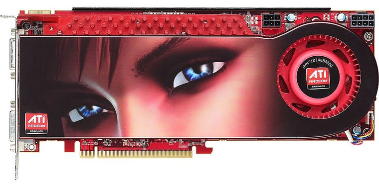

[ PCI EXPRESS GRAPHICS // IDENTIFIED COMPONENT ]
ATI Radeon HD 3870 X2 1 GB
2 × RV670 XT, 2008. This record identifies the listed retail model/configuration; board-partner variations are called out separately.

MODEL / VARIANT: Single-card HD 3870 X2 with two GPUs. The 1 GB total is split between GPUs and is not a single 1 GB framebuffer available to either processor.
Recorded specifications
| Cataloged product | ATI Radeon HD 3870 X2 1 GB |
|---|---|
| GPU / architecture / launch | 2 × RV670 XT; 2008. |
| Core & memory | Dual-GPU board with two RV670 processors (320 stream processors each); 1 GB total GDDR3 arranged as 512 MB per GPU, with each GPU using its own 256-bit memory interface; reference GPU clock 825 MHz. |
| Host interface & power | PCI Express 2.0 x16 host interface; reference power input is one 6-pin plus one 8-pin PCIe connector. About 197 W reference board-power class; dual-GPU load, heat and transient draw require suitable PSU capacity and case airflow. |
| Typical reference outputs | Reference class outputs include dual DVI and TV-out; exact panel, adapters and supported display combinations vary by card revision. |
| Board dimensions | Reference board length is approximately 267 mm, with a two-slot cooler; partner/OEM revisions can differ. Verify the exact board drawing and slot clearance before installation. |
| Variant boundary | Single-card HD 3870 X2 with two GPUs. The 1 GB total is split between GPUs and is not a single 1 GB framebuffer available to either processor. |
Compatibility, service & archival notes
Requires a PCIe x16 system and a driver stack with working multi-GPU support; application scaling is software-dependent. Allow for a long dual-slot cooler, strong case ventilation and both auxiliary power leads. Some legacy applications/drivers may expose only one GPU or show synchronization artifacts; test the target workload and retain known-good drivers.
- Check the exact slot keying/signaling, board dimensions, auxiliary-power pinout, PSU guidance, airflow and display outputs for the specimen; connector appearance alone does not establish compatibility.
- Install a driver supporting the recorded device ID and target OS. Preserve the original driver and firmware versions before making changes.
- Record board partner, PCB and cooler revision, device/subsystem IDs, BIOS, adapter set and physical condition. Do not power a card with damage, corrosion, obstructed cooling or suspected shorts.
Manufacturer, model & standards sources
- ATI Radeon HD 3870 X2 1 GB specifications — TechPowerUp GPU DatabaseIndependent model-level GPU, memory and interface reference; board revisions may vary.
- AMD legacy graphics drivers and support archiveManufacturer driver-support reference; select the product family, device ID and operating system that match the card.
- PCI-SIG PCI Express specificationsPCI Express host interface reference; multi-GPU driver/application support is a separate compatibility requirement.
- AMD product support and driver selectionAMD manufacturer support reference for identifying a compatible driver branch and operating system; availability depends on product age.
- Retro Hardware Review — Can Single HD 3870 Beat Its X2 Counterpart?Independent video review; treat as supplementary context, not primary manufacturer documentation.
GPU-family references do not supersede the card manufacturer’s manual, nameplate or board revision for a specific specimen.